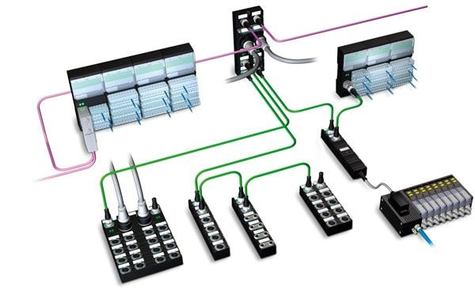

=======
=======
Administración de Redes
El objetivo principal de la administración de red es en mantener operativa la red
satisfaciendo las necesidades de los usuarios. La utilización de herramientas adecuadas
permite realizar de forma centralizada la administración de múltiples redes de gran tamaño
compuestos de cientos de servidores, puestos de trabajo y periféricos.
Normalmente las herramientas de administración de red forman un conjunto muy heterogéneo de
aplicaciones proveniente de, por ejemplo, el sistema de gestión de red, el Help Desk,
herramienta de los fabricantes de los dispositivos, herramientas autónomas e independientes.
Además muchas de estas herramientas suelen tener APIs (Application Program Interface)
que permiten el acceso por programación.
Artículo Completo
AUTOR
Resnick García Ríos
Administrador de Red NODO RIMED
ISP "Cap: Silverio Blanco Núnez" Sancti spiritus,
Cuba
Descripcion
Una red de computadoras (también llamada red de ordenadores, red de comunicaciones de datos, red informática) es un conjunto de equipos informáticos y software conectados entre sí por medio de dispositivos físicos que envían y reciben impulsos eléctricos, ondas electromagnéticas o cualquier otro medio para el transporte de datos, con la finalidad de compartir información, recursos y ofrecer servicios.
>>>>>>> 43a498194552df52ea905816b2db023c86e24f32